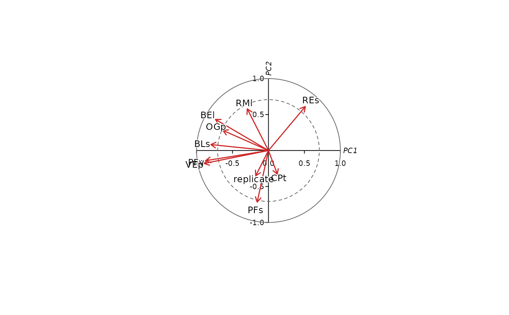

Plot the correlation circle of a functional trait space
Source:R/plot_correlation_circle.R
plot_correlation_circle.RdDraws the classical "correlation circle" (variable factor map) of a
trait_space() ordination: each trait is shown as an arrow from the
origin to its Pearson correlation with the two plotted ordination axes,
inside a unit circle, the standard way of reading which traits drive
each axis and how well a trait is represented by the two-axis subspace
actually plotted (e.g. Legendre & Legendre, 2012, sec. 9.1.5).
Usage
plot_correlation_circle(
x,
inner_circle = TRUE,
cex_labels = 0.8,
arrow_col = "firebrick3",
label_col = "black",
circle_col = "grey40",
label_offset = 1.15,
...
)Arguments
- x
An object of class
"intrait_traitspace", as returned bytrait_space().- inner_circle
Logical, draw a dashed inner circle at radius
sqrt(0.5), the conventional threshold above which a trait is considered well represented by the two plotted axes (i.e. more than half of that trait's variance is captured by them jointly). Defaults toTRUE.- cex_labels
Character expansion for trait labels. Defaults to
0.8.- arrow_col, label_col, circle_col
Colours for the arrows, trait labels, and circle(s), respectively.
- label_offset
Numeric, how far outside each arrow tip its label is placed, as a multiple of the arrow's own length from the origin (e.g.
1.15places a label 15% beyond the tip). Defaults to1.15.- ...
Further arguments passed to
graphics::plot().
Value
Invisibly returns a matrix of trait-axis correlations (one row
per trait actually used in x, one column per plotted axis) – the
values represented by the arrows.
Details
Unlike a plot of raw PCA loadings (x$loadings), which are unit-norm
within each axis and so are not directly comparable in length across
traits or informative about how well a trait is captured by the two
plotted axes jointly, the coordinates plotted here are the actual
Pearson correlation between each trait (as included in the ordination,
i.e. after any log_transform/scale/imputation/outlier removal –
see x$X) and the ordination scores on the two plotted axes (x$scores).
Because a Pearson correlation is always in [-1, 1], every arrow tip
necessarily falls on or inside the unit circle: a tip near the circle
means that trait is well summarised by the two-axis plane shown, while
a short arrow means most of that trait's variance lies on other,
unplotted axes (or, for method = "pcoa", was not linearly captured by
this ordination at all). This computation does not depend on
method ("pca" or "pcoa"), or on whether scale = TRUE was used
when building x, since a Pearson correlation is itself scale-invariant.
The plot itself is drawn without a surrounding box: tick marks and
values (-1 to 1) are instead placed directly on the horizontal
(y = 0) and vertical (x = 0) reference lines through the origin,
and each line is labelled with its axis name only (e.g. "PC1"), in a
small italic font, just outside the unit circle and centred on the
line itself – the standard presentation of a correlation circle in
the literature (e.g. ade4::s.corcircle()). The vertical axis's label
is itself drawn rotated (reading bottom to top), as for a conventional
ylab.
Examples
fish <- load_t26_saudrune_landmarks()
segments <- fishmorph_segments(fish)
#> Warning: 3 specimen(s) have a zero-length or missing scale bar (points 20-21); their segments will be NA. See fishmorph_ratios()'s `landmarks` argument to still recover the 9 unitless ratios for these specimens directly from pixel-space distances.
ratios <- fishmorph_ratios(segments)
ts <- trait_space(ratios, groups = fish$metadata$species, na_action = "omit")
#> Warning: Dropping non-numeric column(s) from the ordination: specimen, individual, species, population, operator
#> na_action = "omit": removing 230 row(s) out of 558 with missing values.
#> flag_outliers: 21 specimen(s) flagged as within-group outlier(s) across 5 group(s) (Barbatula barbatula, Gobio occitaniae, Leuciscus burdigalensis, Phoxinus phoxinus/bigerri, Squalius cephalus); this only flags candidates for review (e.g. with plot_landmarks()/plot_fishmorph_points()), nothing was removed automatically. Set remove_outliers = TRUE to exclude them from the ordination, or see $outlier_screen for details.
#> flag_outliers: 2 group(s) have fewer than outlier_min_n = 5 specimens and were not screened (distance still reported, flagged = NA).
# \donttest{
plot_correlation_circle(ts)

# }